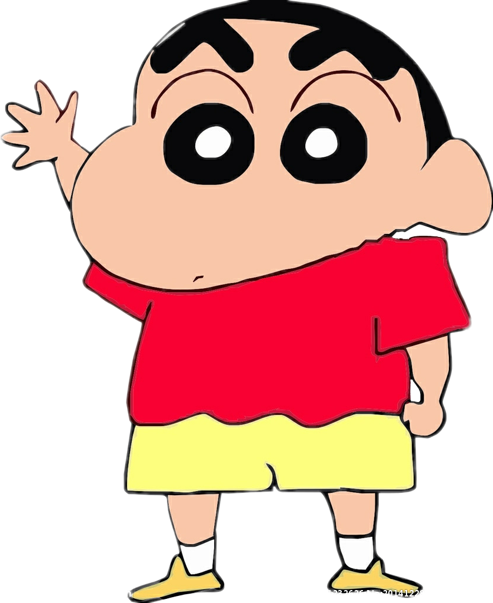

Shinnosuke Nohara
Es el protagonista del anime Crayon Shin Chan.
Es un niño travieso, divertido y pervertido que vuelve locos a todos. Sus padres se llaman Hiroshi Nohara y Misae Nohara, y a partir del episodio 203 tiene una hermana pequeña llamada Himawari. Tiene un perro llamado Nevado (En japonés シロ, Shiro) al que prometió dar de comer y sacar a pasear, aunque casi siempre se le olvida. Shin Chan va al parvulario Futaba, a la clase de los Girasoles. Entre sus compañeros de clase, sus mejores amigos son Masao Satō, Nené Sakurada, Tooru Kazama y Boo-chan, con los que forma el Ejército de Kasukabe. Su profesora es la señorita Yoshinaga.
Mis skills
Patinaje
Fútbol
Canto
Amigable
Baile
Timidez